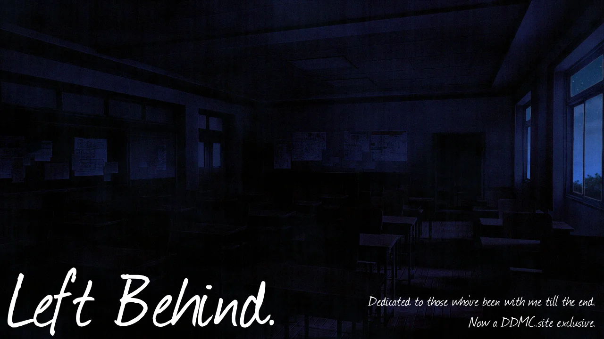

Left Behind
Author: Tune Eternal
Contributors: Tune Eternal
Description:
Dedicated to those that have been with me since the end.
Author: Tune Eternal
Contributors: Tune Eternal
Description:
Dedicated to those that have been with me since the end.